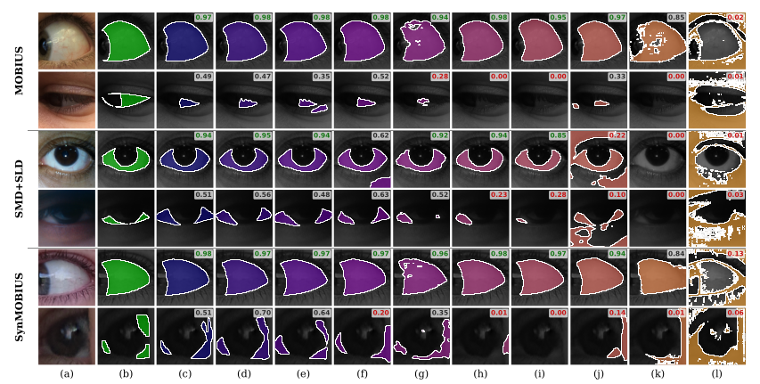
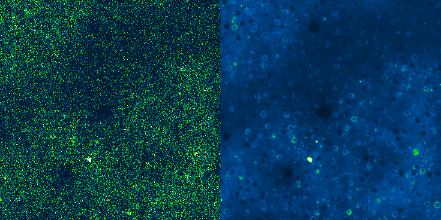

Education
Ahmedabad University — 2025 - Present
M.Tech in Computer Science and Engineering (Data Science & Analysis and Artificial Intelligence)
School of Engineering and Applied Science · Advised by JB Sir · CGPA 3.45/4.00 (in progress)
Coursework: Deep Learning, Computer Vision, Large Scale Cloud Computing, Research Methodology
New L. J. Institute of Engineering and Technology — 2021 - 2024
B.E. in Computer Science and Engineering (Artificial Intelligence and Machine Learning)
Gujarat Technological University · CGPA 9.71
Coursework: Advanced Data Structures, Artificial Intelligence, Machine Learning, Computer Vision, Big Data Analytics
Government Polytechnic, Ahmedabad — 2018 - 2021
HSC (Diploma in Information Technology)
Gujarat Technological University · CGPA 9.76
Coursework: Programming Fundamentals, Web Technologies, Database Management, Operating Systems, Computer Networks
Ahmedabad International School — 2018
Gujarat Secondary Education Board · Percentile 96.5%
GSEB curriculum, Grades 7-10
Ahmedabad International School — Grades 1-5
Primary Years Programme (PYP) - International Baccalaureate (IB)
Publications

Label-Efficient Sclera Segmentation with Foundation Models: SSBC 2026
Competition summary paper for SSBC 2026 at IJCB: sclera segmentation under two tracks — foundation-model adaptation with fully annotated training data, and label-efficient learning restricted to unlabelled imagery. Adapted foundation backbones set a new state of the art, with the top label-efficient model nearly matching the fully supervised winner (F1 0.870 vs 0.876).
IEEE International Joint Conference on Biometrics (IJCB) 2026 — Sclera Segmentation Benchmarking Competition (SSBC)

AI4Life Open Calls and Public Challenges: why, how, and what we have learned.
Report on three open calls and three public image-restoration challenges run by the AI4Life consortium between 2023 and 2025: 22 supported projects from 151 applications, and 225 challenge participants. Includes an analysis of winning approaches — among them our Restormer3D in the calcium-imaging denoising challenge — and the core lesson that data, annotations, and shared infrastructure, not models, are the rate-limiting step.
Preprint, 2026
Research Projects

Improving Online Trackers via Classical ML Feature Evolution
Re-identification is where UAV multi-object tracking usually falls apart, so this project models how SIFT features evolve along each track and trains Random Forest classifiers to decide when a new detection belongs to an existing identity. Plugged into a BoT-SORT-style association pipeline with Hungarian data assignment and Kalman filtering, the classical stack produced steadier identity consistency and higher precision and MOTA than the baseline trackers we measured against.

Small Object Detection & Tracking for UAV Videos
Small objects shed pixels fast at altitude, so this pipeline pairs YOLOv11 with SAHI tiling to keep detections alive, then re-identifies targets across frames using Siamese networks trained with contrastive loss. Hyperparameters were tuned with Optuna's Bayesian optimisation over a focal-loss objective, and identities are maintained through Kalman-filtered tracking. On our UAV benchmarks the system cut false positives by 21.5% while improving overall tracking performance.
Unsupervised Denoising for Fluorescence Microscopy
Unsupervised Denoising for Fluorescence Microscopy
Restormer3D is my 3D adaptation of Restormer — a U-Net built from multi-Dconv head transposed attention blocks — designed for fluorescence microscopy and calcium-imaging denoising without ground-truth data. In the AI4Life Grand Challenge the model topped every leaderboard, finishing 1st in both tracks. The work fed into the AI4Life consortium paper and is open-sourced on GitHub.
Early Sepsis Detection from Electronic Health Records
Early Sepsis Detection from Electronic Health Records
Sepsis moves fast, so early warning matters. I built an ML pipeline over MIMIC-IV ICU electronic health records, engineering time-series clinical features and handling missingness with imputation strategies suited to irregular sampling. After SMOTE balancing for class rarity, LightGBM and XGBoost ensembles were tuned specifically for recall rather than raw accuracy, reaching 0.921 ROC-AUC and 0.812 PR-AUC at roughly 83.6% recall — with SHAP explanations keeping every alert interpretable.
LayoutLM vs. RoBERTa for Document Understanding
LayoutLM vs. RoBERTa for Document Understanding
How much does layout actually matter for document understanding? I benchmarked text-only RoBERTa against multimodal LayoutLMv3 on the DocILE dataset for classification and key-information extraction, contrasting full fine-tuning with parameter-efficient PEFT/LoRA adapters under OCR-based pipelines. The layout-aware transformer won decisively — 0.756 accuracy and 0.704 F1 against its text-only rival — validating multimodality as the right default for document AI.
Reflex-Based Control & A* Planning for a Planetary Rover
Reflex-Based Control & A* Planning for a Planetary Rover
For planetary exploration, energy is scarcer than compute. This rover pairs reflex-based reactive control with A* path planning driven by custom terrain-aware and Euclidean heuristics on simulated grid worlds. Terrain-aware variants kept paths near-optimal, while an energy-cost heuristic deliberately traded about 30% more expanded nodes and runtime for routes that respect battery budgets — a study in matching search strategy to mission constraints.
Engineering Projects
React Headless Token Auth
Open-source contribution to a headless React authentication library. Token expiration was breaking sessions silently — I fixed the expiry handling with setTimeout and an expiration context, then improved the developer experience with new hooks, contexts, and Axios request interceptors that attach and refresh tokens automatically. All work went upstream through reviewed pull requests alongside general code reviews and maintenance.
Django Dynamic Models
Contribution to django-dynamic-models, a library that creates Django models at runtime instead of in source code — useful for metadata-driven systems like our archival platform. I resolved long-standing stability bugs around dynamic model registration, closed five issues, landed three accepted pull requests, and rewrote the contributor documentation.
Django DB File Storage
Fork-and-patch of django-db-file-storage, which stores uploaded files in the database rather than on the filesystem. I migrated the codebase to Django 4.x and fixed NameException crashes caused by Windows path-separator logic — a patch submitted upstream and publicly credited by the Berlin Institute of Health.
SPAPAS — Student Prediction and Performance Analysis System
A Django-based system using linear and logistic regression to predict student performance and visualize insights through dashboards for data-driven academic evaluation.
Work Experience
Chief Technology Officer · 2026 - Present
Technology strategy & delivery leadership
Own the technical direction of every Tirth Infotech engagement end to end, from bid-stage architecture and estimation through security reviews, deployment sign-off, and post-launch support. Set infrastructure standards for AWS and Gujarat State Data Centre hosting patterns, DMZ topologies, and CI conventions; choose stacks per project constraint rather than fashion; and mentor the engineering team through design and code review. Still hands-on: I review critical diffs personally and step into thorny performance or security problems directly.
Systems Architect & Full Stack Developer · Jan 2023 - Aug 2025
Archives Portal — Gujarat State Archives & Food and Drugs Control Administration
Architected and shipped the Archives Portal for the Gujarat State Archives and the Food and Drugs Control Administration, hosted on the Gujarat State Data Centre across three servers in a DMZ topology — one machine each for the Django/DRF application, PostgreSQL, and MongoDB. Built dynamic, metadata-driven APIs and admin panels so any archival schema can be modelled without code changes, added Gujarati full-text search over TsVector lexemes, RFC 7233 ranged downloads for large documents, and hash-table caching on hot client and server paths. The platform cleared two security audits by a CERT-In empanelled auditor and remains in production.
Full Stack Developer · Jul 2024 - Mar 2025
SahajPranali — Collector Office, Buldhana (Government of Maharashtra)
Built SahajPranali for the Collector Office in Buldhana, digitising land-revenue records — 7/12 extracts, mutation entries, land-acquisition files, and registers — behind search by district, taluka, village, and case number. Designed the secure dual-login model: OTP verification for citizens alongside role-based access for officials, plus watermarking and audit logging on every document view and download. Paid online downloads cut office visits and physical record handling, speeding up citizen services while preserving the legacy archive.
Developer · May 2022
Document Retrieval Portal — GSHSEB
Shipped in weeks, not months. A Karobari document retrieval portal for GSHSEB built on a static-generation model I chose after analysing how often the client's metadata actually changed — rarely — so static pages plus an AJAX search-suggestion panel beat a heavier dynamic stack on cost, speed, and reliability. Deployed solo-instance on AWS LightSail with Django and PostgreSQL.
Developer · Mar 2022 - Present
Objection Raising System — State Recruitment Boards
Recruitment exams attract objections by the thousand, and this platform is where candidates file them and boards resolve them. I developed the Django + MS SQL Server system deployed on AWS behind Apache Httpd and mod_wsgi, then made it fast: profiling showed a cryptographic hash burning CPU on every request, so a custom XOR integrity check replaced it — roughly 70% CPU saved across all eight cores and headroom for about 5,000 requests per minute on a single instance. Hot queries moved to Transact-SQL stored procedures, Django was hardened for thread safety under Apache MPM Prefork (10 processes x 100 threads), and I still maintain the system today.
Developer · Dec 2021 - Aug 2022
Stock Management System — GSHSEB
Custom stock management and tracking for GSHSEB covering purchase orders, sales orders, and internal and external transport movements across warehouses. Designed the ACID-compliant schema that kept accounting modules consistent, built more than ten reports shaped around how each office actually works, and gave administrators spreadsheet bulk-upload plus user management so operations never queued on developers. Django + PostgreSQL on AWS LightSail behind Apache.
Intern & Junior Developer · Jun 2018 - Aug 2021
Where it all started: five summers and part-time years maintaining VB.NET and C# WinForms applications for real clients with real deadlines. Customised over fifty Crystal Reports to match exactly what each office wanted on paper, travelled to client sites for on-premise deployments and support, and learned early the discipline of shipping software other people depend on.
Skills
Languages
PythonC/C++C#VB.NETJavaScriptSQLHTML/CSSTypeScriptKotlinJavaBash / ShellYAML
ML / Deep Learning & Computer Vision
TensorFlow/KerasPyTorchScikit-LearnHugging Face TransformersUltralytics YOLOSAHI (tiling inference)OpenCVNoise2Noise / Noise2VoidPandasNumPyMatplotlibSeabornOptunaSHAPSciPyONNXONNX RuntimeCUDApynvml
Web & Backend Frameworks
DjangoDjango REST FrameworkNext.jsReact.jsjQuery.NET FrameworkTailwind CSSHandlebarsjs-yamlshadcn/uiSimpleJWTReact NativeExpoPostCSSESLintJinjaDataTables.jsChart.js
Databases & Messaging
PostgreSQLMySQLMS SQL ServerMongoDBRedisRabbitMQpsycopg2
Mobile & Android
AndroidCameraXML KitLiteRTReact Native SVG
DevOps & Servers
AWS (Elastic Services, RDS, SageMaker, LightSail)DockerNginxApache httpd / mod_wsgiCron / CeleryPrometheus / GrafanaGitHub ActionsOpenStackAnsibleKollaQt
Techniques
PEFT / LoRA fine-tuningMulti-object tracking (BoT-SORT, Kalman)Classical descriptors (SIFT, HoG, LBP)Feature engineering & SMOTEFull-text search (TsVector)REST API designT-SQL stored procedures
Tools & Platforms
Git / GitHub / GiteaGitHub PagesLaTeXJupyterLabPower BIPostman / InsomniaFigmaCrystal ReportsUbuntu / RHEL / Windows Server
Other
Outside of research and work:
ReadingPhotographyGuitar & other instrumentsCycling — happy to swap good routes around AhmedabadBrewing coffee — always up for talking pour-over ratios
Certificates
May 2026
AWS Academy Graduate - Data Engineering - Training BadgeAmazon Web Services Training and Certification (AWS Academy)
Dec 2025
AWS Academy Graduate - Cloud Foundations - Training BadgeAmazon Web Services Training and Certification (AWS Academy)
Mar 2023
Data Science ToolsIBM Developer Skills Network [DS0105EN]
Mar 2023
Advanced SQL for Data ScientistsLinkedIn Learning
Mar 2023
SQL for Data AnalysisLinkedIn Learning
Mar 2023
Data StrategyNASBA & Project Management Institute (CPE Credit: 1.6)
Mar 2023
Python Data AnalysisNASBA (CPE Credit: 4.8)
Mar 2023
Designing Highly Scalable and Highly Available SQL DatabasesLinkedIn Learning
Mar 2023
Machine Learning with Python: FoundationsLinkedIn Learning
Mar 2023
Level Up: Advanced PythonLinkedIn Learning
Feb 2023
Data Science 101IBM Developer Skills Network [DS0101EN]
Feb 2023
Data Visualization with PythonIBM Developer Skills Network [DV0101EN]
Feb 2023
Machine Learning with PythonIBM Developer Skills Network [ML0101EN]
Feb 2023
Python 101 for Data ScienceIBM Developer Skills Network [PY0101EN]
Sep 2020
Introduction to Data Science in PythonUniversity of Michigan (Coursera)
May 2020
Programming for Everybody (Getting Started with Python)University of Michigan (Coursera)
Apr 2020
Python Data StructuresUniversity of Michigan (Coursera)
Jan 2013
GESE Grade 2 (CEFR A1)Trinity College London